本课导读模块二开局
前面六次课，你让 AI 回答问题。这一次开始，你要让它动手干活—— 读你的文件、整理你的文件夹、生成你要的东西。 这节课结束，你会交出自己的第一个由 AI 完成的任务。
学习目标
学完这一课，你应该能——
- 说出 WorkBuddy 和聊天机器人最本质的区别；
- 独立走完「新建任务 → 选工作目录 → 下指令 → 验收」整个流程；
- 按六要素写出一条让人（和 AI）都看得懂的任务说明；
- 完成至少 1 个真实任务，并说清产物放在哪里；
- 说清为什么第一次操作必须用试验目录、而不是自己的桌面。
知识点导航
一、WorkBuddy 是什么概念
一句话：聊天机器人给你建议，WorkBuddy 给你结果。
你在对话框里说一句话，它会自己拆解步骤、读取你授权的文件夹、动手改文件， 最后把成品放到结果区给你验收。
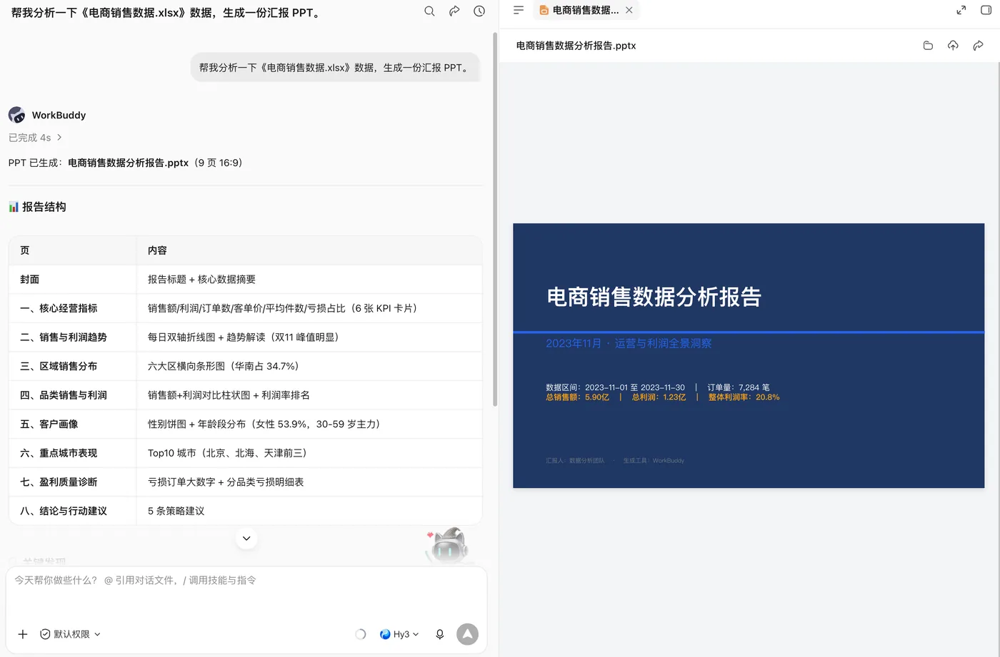
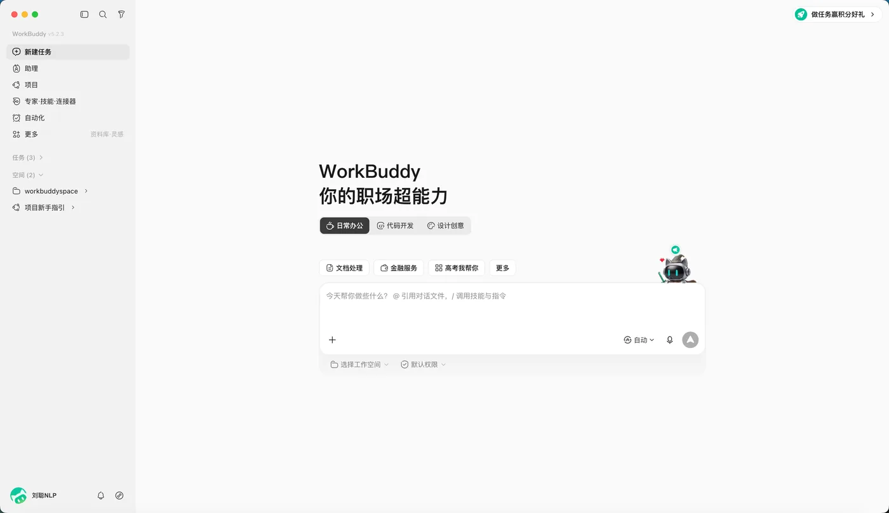
二、下载与安装上手第一步
先把工具装上。只有一个官方入口，Windows 和 Mac 各有几步，跟着图走就行。
下载：只从官方入口进
下载页：www.codebuddy.cn/work 产品官网：www.workbuddy.cn
进下载页后选择 WorkBuddy，点「下载 WorkBuddy」。页面会自动识别你的设备， 给出 Mac ARM64 / Mac x64 / Windows x64 三个版本，不用自己判断。
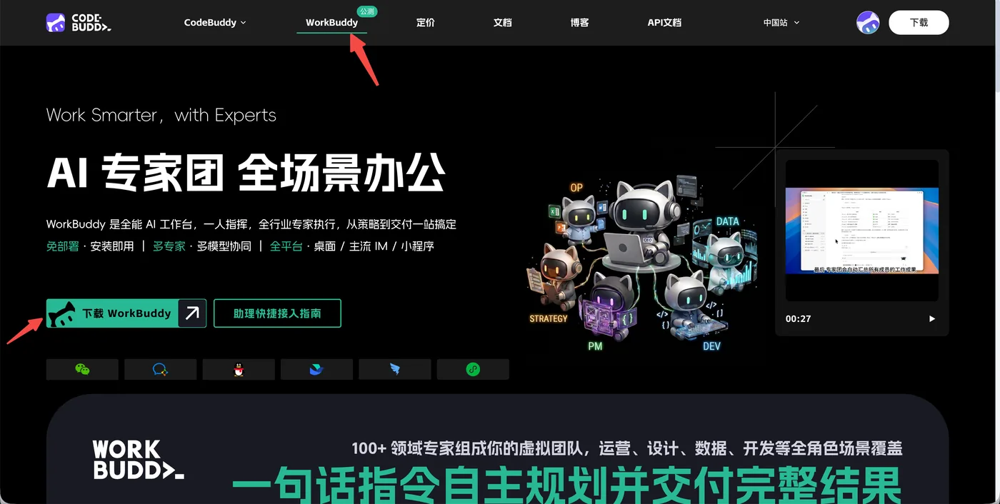
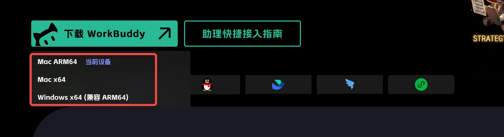
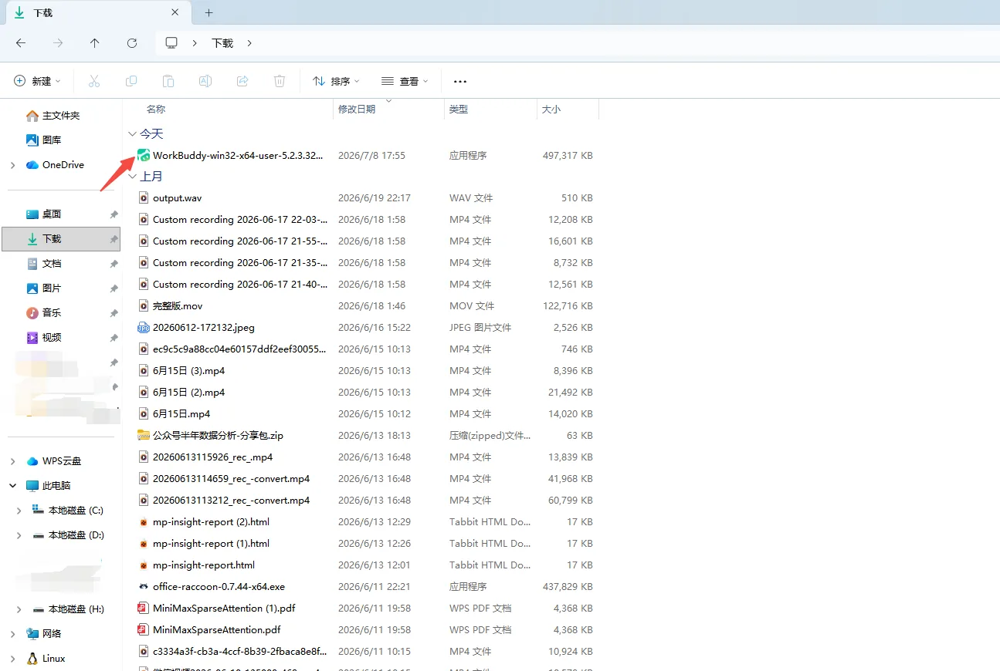
Windows 安装（约 3 分钟）
- 双击安装文件如果系统弹出安全提示，先核对发布者与下载来源，确认是 Tencent Technology 再继续。
- 选择安装范围选「仅为我安装」即可，不需要管理员权限。若给整台电脑装才选「所有用户」。
- 选择安装位置默认装在 C 盘即可（需要约 1.1 GB 空间）。想换盘就点「浏览」。
- 等待安装完成进度条走完，勾选「运行 WorkBuddy」直接启动。
- 准备工作环境首次启动会做一次环境准备，稍等片刻，完成后自动进入主界面。
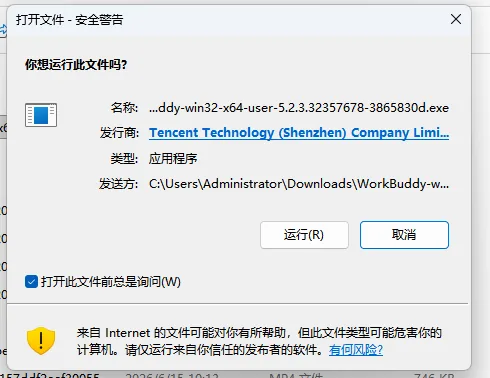
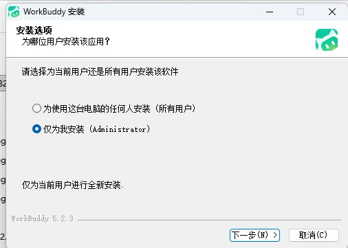
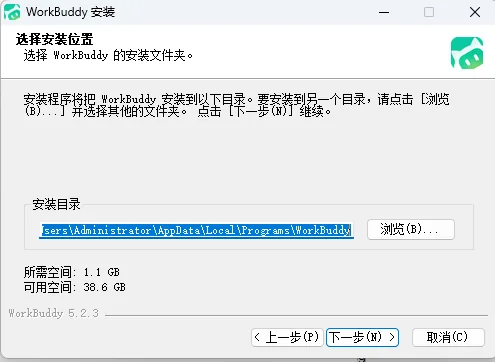
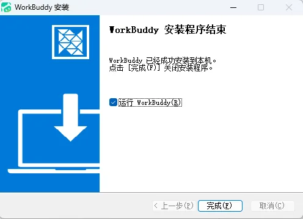
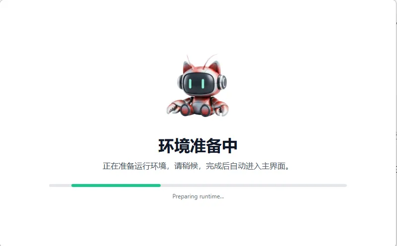
macOS 安装（两步）
- 把图标拖进「应用程序」打开下载好的 .dmg，把 WorkBuddy 拖到 Applications 文件夹。
- 从启动台打开在「应用程序」里找到它，双击启动。首次打开若提示来源不明， 去「系统设置 → 隐私与安全性」里允许一次即可。
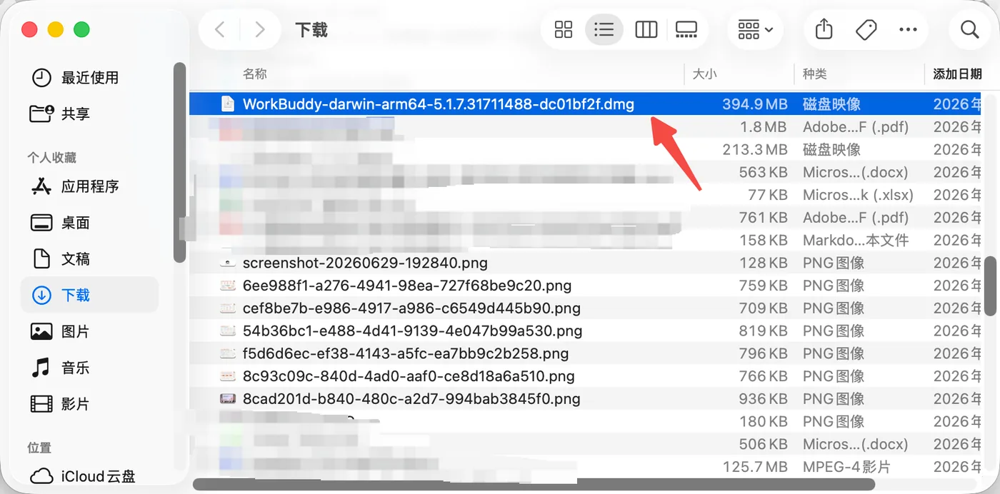
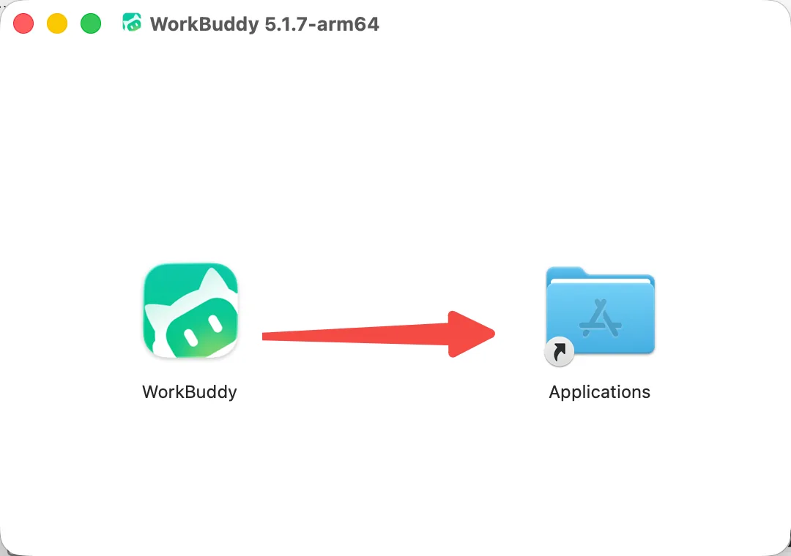
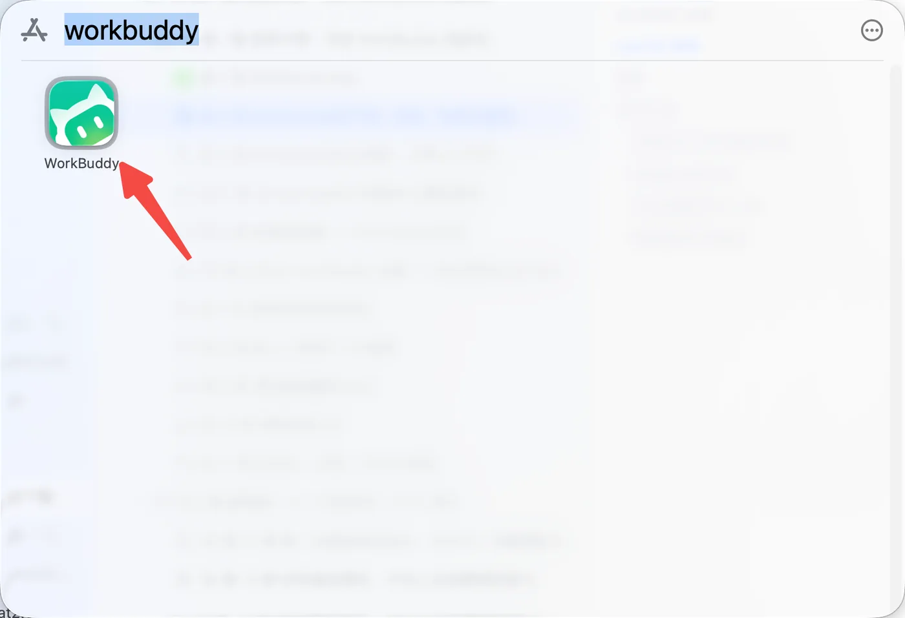
登录
启动后点「登录」，会自动跳转到网页完成认证—— 支持微信扫码，也可以用手机号登录。登录完成后回到客户端就能用了。
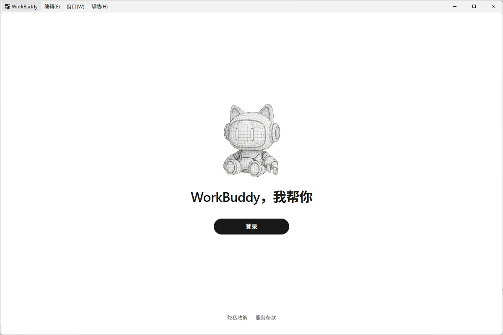
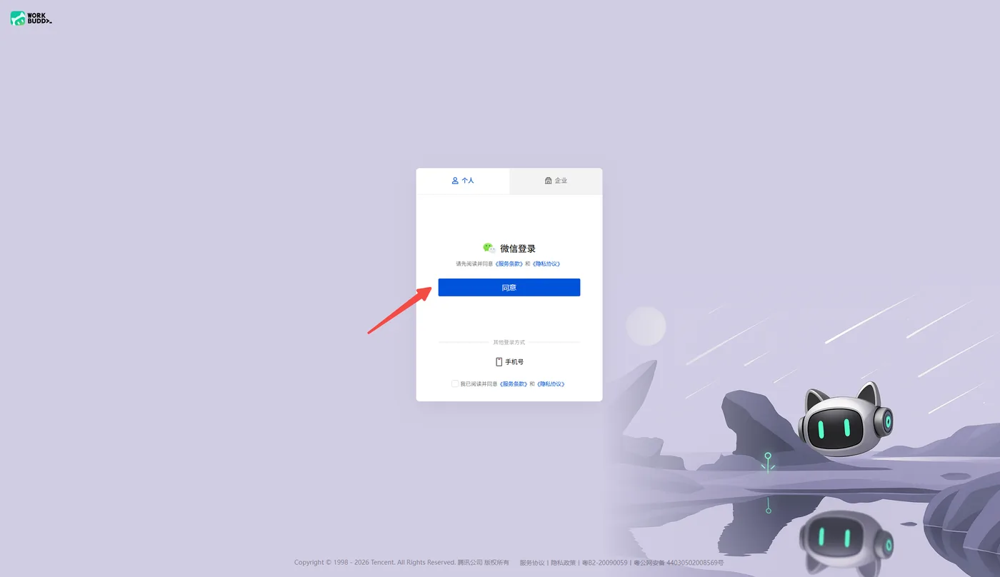
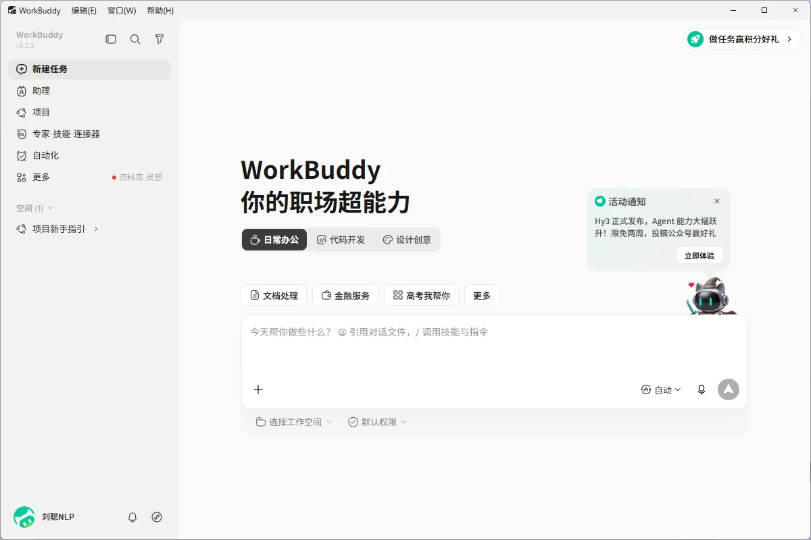
以后怎么更新
左下角点个人中心→ 选「检查更新」，有新版本就能直接升级。
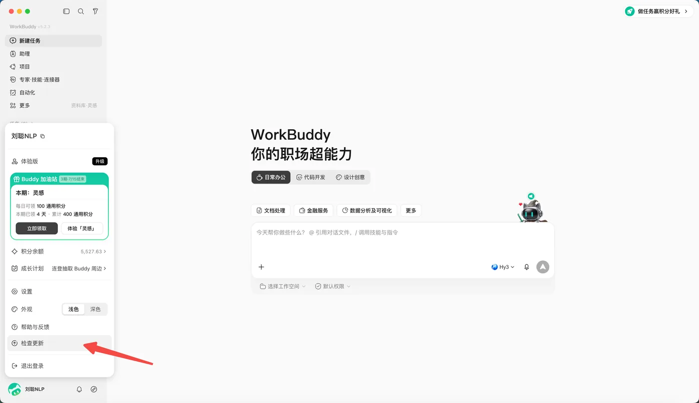
装不上怎么办
| 症状 | 怎么处理 |
|---|---|
| 安装包打不开 / 提示损坏 | 删掉重新从官网下载，核对系统和芯片版本。仍失败就记录系统版本、安装包名和报错截图， 走官方反馈渠道。不要随意关闭系统安全功能。 |
| 登录后没有反应 | 检查默认浏览器有没有拦截登录回跳、网络代理是否影响认证、系统时间是否准确。 退出应用重试，并保留日志与截图。 |
| 无法读取或写入文件 | 确认任务选的工作目录对不对、系统有没有授予该目录权限、文件是不是被别的程序占着。 先用一个空白文本文件测试，别拿重要文件反复试。 |
| 更新前要不要备份 | 应用更新一般不动你的工作文件，但长期项目仍建议把输入、产物、配置纳入定期备份。 |
做完你手上会有：一个能正常登录的 WorkBuddy 主界面，而且你能指出三个区各在哪。
第 1 步 · 装好并登录（8 分钟）
- 从官网下载打开下载页，按自动识别的版本下载。
- 按图装好Windows / Mac 照着上面的步骤走，遇到安全提示先核对发布者。
- 登录用微信扫码或手机号登录，进到主界面。
- 顺手检查一次更新左下角个人中心 → 检查更新，确认自己用的是最新版。
第 2 步 · 认一认三个区（4 分钟）
看着你的主界面，把下面三块地方一一对出来：
- 侧边栏最左边那一条——管任务的地方。
- 对话区中间最大那块——你下需求的地方，输入框就在下面。
- 结果区右侧——成品、生成的文件出现在这里。
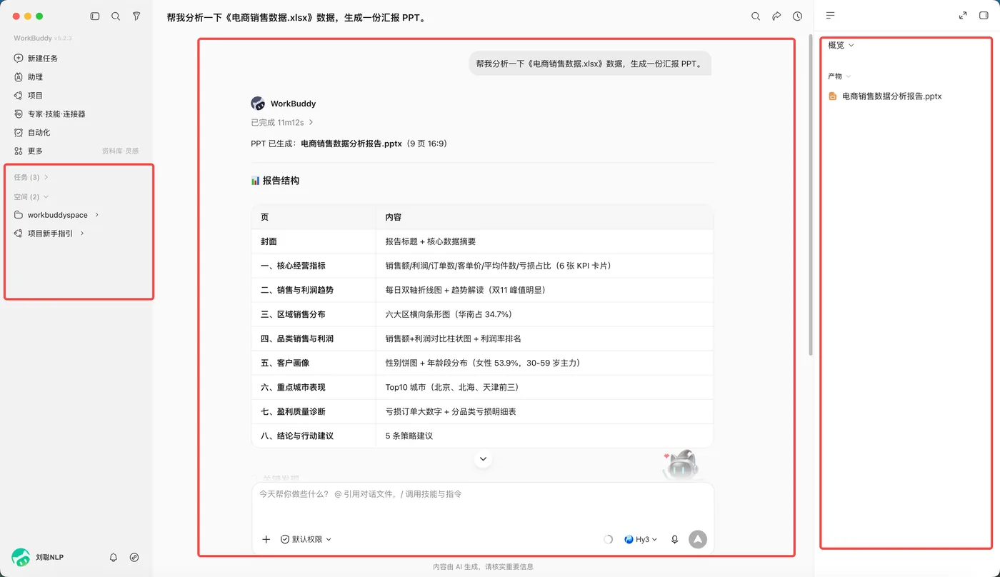
做到这两条，就算做完了
- 能看到主界面登录后不报错、能看到任务列表。
登录卡住：换个网络或稍后再试；扫码不成功就改用手机号。 - 能对着屏幕指出三个区各在哪闭上眼想一遍：管任务的在哪、下需求的在哪、看成品的在哪。
分不清：把上面那张图的红框跟自己的界面一一对上，再看一遍。
课堂里网络受限装不上，先跟同桌共用一台已完成安装的电脑往下做—— 另外几个实操都在这台机器上完成，别卡在安装这一步。
三、开一个新任务：8 步走完上手
所有任务都从「新建任务」开始。完整流程就是下面 8 步：
| # | 做什么 | 要点 |
|---|---|---|
| 1 | 点「新建任务」 | 侧边栏顶部 |
| 2 | 选择或创建工作目录 | 它只能在你指定的这个文件夹里干活 |
| 3 | 判断用哪种模式 | 默认 Craft（直接干）；拿不准就用 Plan（先看计划） |
| 4 | 选择模型 | 默认自动就行 |
| 5 | 输入任务说明 | 这一步决定成败，下一节专门讲 |
| 6 | 按需指定技能 / 专家 / 连接器 | 新手先跳过 |
| 7 | 发送，观察它的计划和文件变更 | 不满意可以随时叫停 |
| 8 | 在结果区预览产物并验收 | 没问题才算做完 |
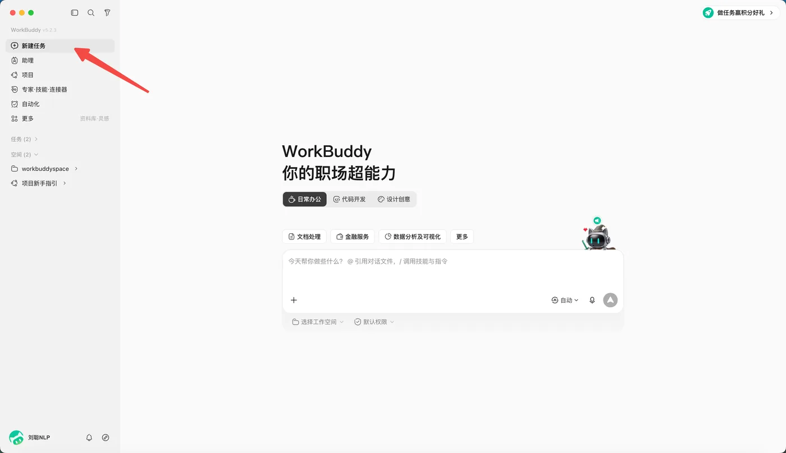
其中第 2、3、4 步都是在对话区里点选，界面长这样：
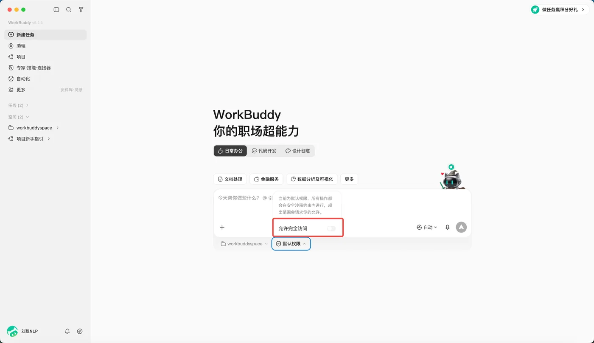
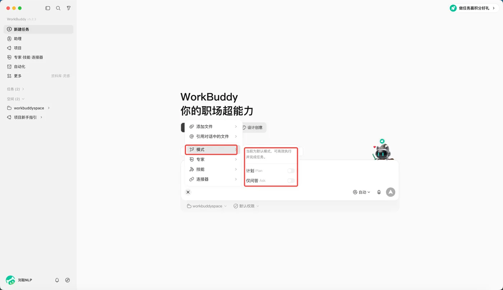
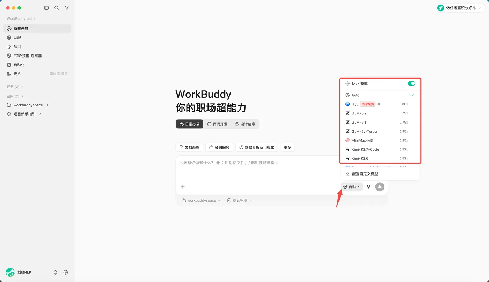
做完你手上会有：一个叫 wb-试验 的文件夹（里面 6 个文件），
以及一个工作目录指向它的任务。
第 1 步 · 造试验场（3 分钟）
- 在桌面新建一个文件夹，命名
wb-试验为什么要专门造一个？WorkBuddy 的操作权限是按文件夹给的—— 目录划得小，出问题也只影响这一个文件夹。别拿自己的桌面或重要文件夹试。 - 在里面建一个
input子文件夹路径是桌面/wb-试验/input。 - 往 input 里放下面这 6 个文件内容随便写（几个字就行），文件名要一模一样：
会议记录.docx
产品图-01.png
产品图-02.png
销售数据.xlsx
未命名文档1.txt
2026-09-15 客户反馈.md第 2 步 · 把任务的工作目录指到它（4 分钟）
- 回到 WorkBuddy，点「新建任务」把工作目录选成刚才的
桌面/wb-试验。 - 确认目录选对了看对话区左下角显示的是不是
wb-试验。
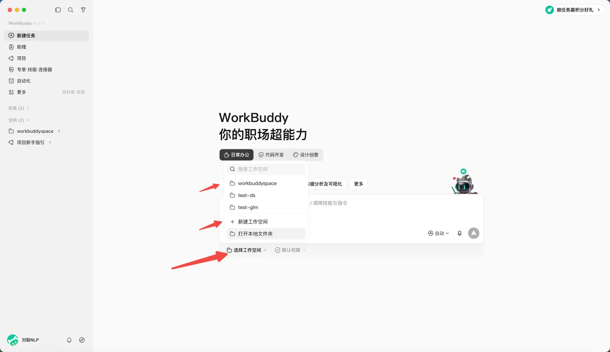
做到这两条，就算做完了
- 6 个文件都建好了打开
桌面/wb-试验/input数一遍，文件名跟上面一模一样（含日期和空格）。
少了、或名字不对：后面「整理文件」那个实操会失败——现在补上，比到时候排查省事。 - 左下角显示的正是
wb-试验选错目录，后面全白做。
显示的是别的路径：点左下角重新选一次目录。
四、任务说明怎么写：六要素关键
任务做得好不好，八成取决于你这段话写得清不清楚。把下面六样说全，基本不会翻车：
| 要素 | 要回答的问题 |
|---|---|
| 目标 | 最终要解决什么问题 |
| 输入 | 用哪些文件、目录或链接 |
| 动作 | 要分析、整理、转换，还是生成 |
| 约束 | 哪些不能改，要遵守什么规范 |
| 输出 | 交付什么文件，放到哪里 |
| 验收 | 用什么标准判断合格 |
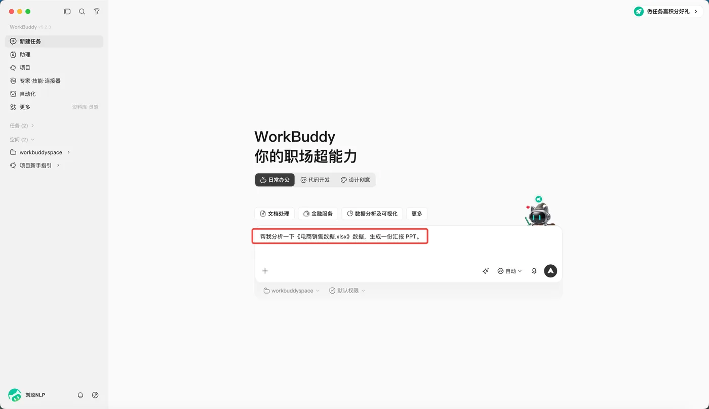
做完你手上会有：一份你自己写全的六要素指令，外加「补了哪一行之后计划变靠谱」的判断。
第 1 步 · 先看反面例子（1 分钟）
下面是很多人的真实写法——一句话就发出去了，结果全靠猜：
帮我整理一下这个文件夹第 2 步 · 自己把它改成六要素版（2 分钟）
- 在纸上或记事本里，把六行补齐 「目标 / 输入 / 动作 / 约束 / 输出 / 验收」——一行一行写，别跳。
- 写完先别对照答案自己写一遍才知道哪一行最容易漏；参考答案在下面折叠里，写完再看。
第 3 步 · 发出去比一比（2 分钟）
- 用 Plan 模式发你写的那版看它给你的计划里，有没有你没交代、它却自己补上的事。
- 再用原来那句「帮我整理一下这个文件夹」发一次对比两次的计划差在哪。
做到这两条，就算做完了
- 六行都写全了重点检查「约束」和「验收」这两行——最容易漏。
漏了：它们正是防止它乱动文件的部分，补上。 - 能说出「补了哪一行之后，它的计划变靠谱了」要具体到某一行，不能笼统说「写详细就好」。
说不出来：把两次计划并排看，找出那句只出现了一次的约束。
目标：整理 input 目录中的练习文件，便于按类型查找。
输入：仅处理当前工作区的 input 目录。
动作：识别文件类型，提出分类和重命名方案。
约束：不删除、不覆盖原文件；重名时保留两份并标记序号。
输出：先生成 inventory.xlsx 和 proposed-actions.md。
验收：清单文件数与 input 实际文件数一致，所有动作可追溯。
在我确认 proposed-actions.md 前，不移动文件。最后那句「在我确认前不移动文件」是关键——它把动手的决定权留给了你。
五、完成第一个任务：整理文件本课主线
现在正式做。这是你这节课要交出去的东西。
你要完成的任务：把它整理成按类型分好的文件夹，并且先给方案、你同意后再动手。
第 1 步 · 把下面这段原样发给它（点右上角复制）：
目标：整理 input 目录中的练习文件，便于按类型查找。
输入：仅处理当前工作区的 input 目录。
动作：识别文件类型，提出分类和重命名方案。
约束：不删除、不覆盖原文件；重名时保留两份并标记序号。
输出：先生成 inventory.xlsx 和 proposed-actions.md。
验收：清单文件数与 input 实际文件数一致，所有动作可追溯。
在我确认 proposed-actions.md 前，不移动文件。第 2 步 · 看它的计划，别急着点确认
- 它应该先列出 6 个文件对着你的 input 文件夹数一遍：是不是正好 6 个。少了就是漏了。
- 看它打算怎么分类比如「文档 / 图片 / 表格」——这个分法你认可吗？不认可现在就说。
- 确认它没打算删东西计划里只要出现「删除」「覆盖」，立刻叫停，重新交代约束。
第 3 步 · 确认方案，让它执行
- 同意后再说「按这个方案执行」它会真的动手建文件夹、移动文件。
- 盯着「变更」看结果区的「变更」会列出它改动了哪些文件——这是你唯一能看清它干了什么的窗口。
第 4 步 · 验收（这一步最容易偷懒，但最关键）
| 查什么 | 怎么查 |
|---|---|
| 文件少了没有？ | 整理后总共还是 6 个文件（不算新建的两个清单） |
| 清单准不准？ | 打开 inventory.xlsx，数一数是不是 6 行 |
| 有没有被删？ | 去「变更」里找有没有 delete 类操作 |
| 放在哪了？ | 说得清每个文件被移到了哪个文件夹 |
要交的成果：整理好的 wb-试验 文件夹 + 一份「整理前后对比截图」。
完成标准：上面四条都能答「是」，且没有任何文件被删除。
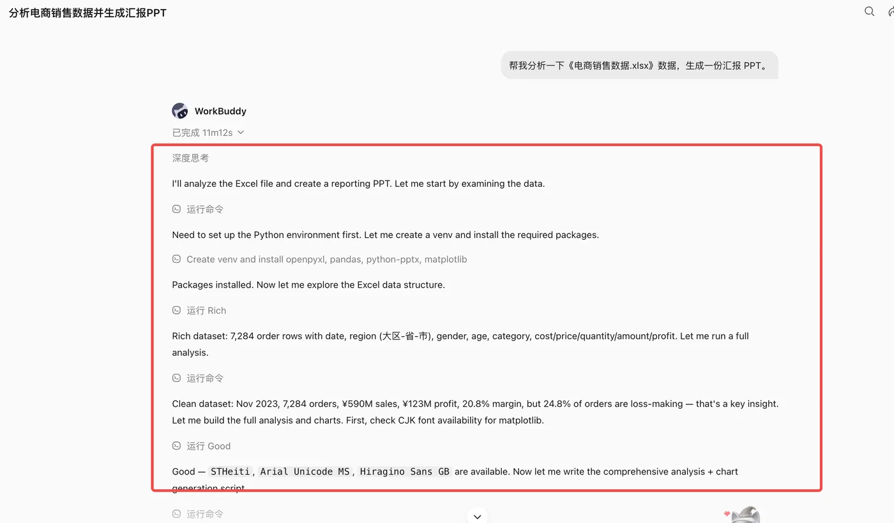
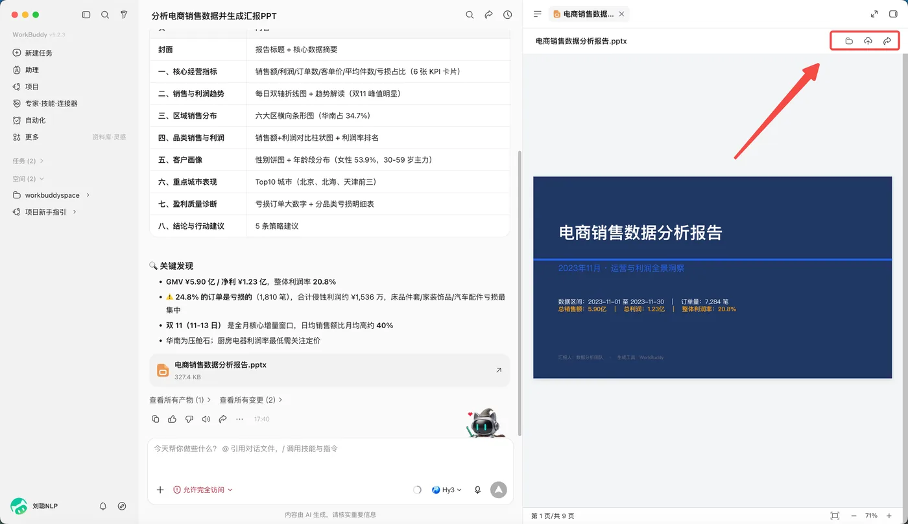
② 不把删除当成任务——「清理」这两个字对它来说太模糊，说清「移动到哪」而不是「删掉」；
③ 不看产物不签收——它说做完了不算，你去结果区看过了才算。
六、再试两个任务选做
第一个任务做完，你已经会用了。另外两个任务换一种类型练手，素材我都准备好了。
第 1 步 · 把这段会议记录存成文件：在 wb-试验/input 里新建一个 meeting.txt，
把下面的内容复制进去（会议记录有点乱，很正常）：
2026 年 9 月 15 日 项目周会 记录
参会：张伟（项目负责人）、李娜（设计）、王强（开发）、赵敏（运营）
上周进度
王强说登录模块开发完成，已提交测试。支付模块进度延后两天，因为第三方接口文档不完整。
李娜说首页改版设计稿已出，等张伟确认。
赵敏说上周新增注册用户 320 人，比前一周下降 8%。
讨论
张伟指出支付模块延期会影响上线时间，要求王强本周五前给出新的排期。
李娜提出首页改版需要补充一个「新用户引导」页面，张伟同意加入本期范围。
赵敏反馈用户流失集中在注册第二步，怀疑是验证码等待时间过长。
待办
1. 王强：9 月 19 日前提交支付模块新排期
2. 李娜：9 月 18 日前补齐新用户引导页设计稿
3. 赵敏：本周内出一份注册流程流失分析
4. 张伟：确认是否调整上线日期，下次周会前给结论
未决事项
支付模块第三方接口问题是否需要更换服务商，暂未确定。
上线日期是否顺延，待张伟确认。第 2 步 · 发这段指令（新开一个任务，或直接用当前任务）：
请把 input/meeting.txt 整理为结构化会议纪要。
必须包含：会议结论、待办事项、负责人、截止日期、待确认问题。
不能从原文确认的负责人或日期写「待确认」，不要自行补全。
输出 output/会议纪要.md 和 output/待办清单.xlsx。
验收：每一项结论可以在原文找到依据；待办不遗漏负责人和时间状态。第 3 步 · 验收，重点查这两条：
| 查什么 | 合格的样子 |
|---|---|
| 待办有没有漏 | 原文有 4 条待办，纪要里应该也是 4 条，且每条都有负责人和日期 |
| 有没有自己编 | 原文没写的地方，它应该老老实实写「待确认」，而不是给你编一个 |
完成标准：上面两条都过关。如果它编了负责人或日期，说明「不要自行补全」这句约束没被遵守—— 把结果和问题一起记下来，这就是你的发现。
第 1 步 · 建素材文件：在 wb-试验/input 里新建 项目汇报.docx，
把下面的内容粘进去存好：
《校园二手交易平台》项目汇报
一、背景
学校每年有大量闲置物品流转需求，现有微信群交易效率低、无信用保障。
2026 年 3 月启动校园二手交易平台开发。
二、现状
已完成用户注册、商品发布、站内消息三个模块，累计注册用户 1847 人，
日活约 260 人，累计成交 412 笔。
三、问题
1. 商品纠纷处理依赖人工，平均处理时长 3.2 天
2. 无信用评价体系，重复卖家占比高
3. 支付环节仍走线下转账，流程繁琐
四、方案
1. 引入信用分体系，按交易完成率和纠纷率计算
2. 增加平台内支付（对接第三方支付）
3. 建立纠纷仲裁流程，明确举证责任
五、计划
2026 年 10 月：信用分体系上线
2026 年 11 月：平台内支付测试
2026 年 12 月：纠纷仲裁流程试运行
六、需要决策
1. 平台内支付的手续费由谁承担
2. 是否引入学生勤工助学岗参与纠纷仲裁第 2 步 · 发这段指令：
把 input/项目汇报.docx 转成 10 页以内的内部汇报 PPT。
受众：部门负责人；汇报时长：8 分钟。
保持原文事实和数字，不新增未经证实的数据。
结构：背景、现状、问题、方案、计划、需要决策。
输出 output/项目汇报.pptx，同时提供逐页内容清单。
验收：每页只有一个核心观点，数字与原文一致，正文在投影状态可读。第 3 步 · 验收：
| 查什么 | 合格的样子 |
|---|---|
| 页数 | 10 页以内 |
| 数字 | 1847 / 260 / 412 / 3.2 天——和原文一字不差 |
| 有没有编 | 原文没提的数据、案例，不该出现 |
| 能不能投屏 | 把页面缩小到 50% 看，正文还能不能看清 |
完成标准：四个都过关。数字对不上是最常见的失败——一定要逐个核。
随堂自测不计分 · 课后自检
先自己想，再点开答案。这套题是给你自己查漏用的，和要提交的作业不重复。
- A. 它的回答更长
- B. 它能真的动手操作文件、交付可验收的结果
- C. 它不需要联网
- D. 它不会出错
- A. 整个 C 盘，方便它找文件
- B. 我的桌面，文件都在那儿
- C. 专建的一个试验文件夹
- D. 不用选，让它自己决定
- A. 目标与输入
- B. 动作与约束
- C. 输出与验收
- D. 用哪个大模型
- A. 正确，它不会骗人
- B. 错误，必须先去结果区核对产物再签收
本课要点回顾
这一课要带走五件事
- 聊天机器人给建议，WorkBuddy 交结果——它会真的动手改你的文件；
- 开任务八步，核心是第 2 步（选工作目录）和第 5 步（写任务说明）；
- 任务说明六要素：目标 / 输入 / 动作 / 约束 / 输出 / 验收，后两个最容易被漏掉；
- 三条红线：不授权大范围目录、不把删除当任务、不看产物不签收；
- 验收看两处：先看「变更」看它改了什么，再看「产物」核对交付物。
下一步棋：今天你是每次手写一段任务说明。 下一课 Skill 技能 会把这段说明固化成文件—— 写一次，以后一句话调用。
课后作业单选 / 多选 / 判断
下面这套题发在学习通上。点一下展开，再点框内右上角「复制」就能整段拿走。
1.（单选）WorkBuddy 和聊天机器人最本质的区别是？
A. 它的回答更长更详细
B. 它能真的动手操作文件、交付可验收的结果
C. 它不需要联网
D. 它从来不会出错
【答案】B
【解析】聊天机器人只能给建议，剩下的活还得你自己干；WorkBuddy 能读取授权目录、执行操作、生成文件，最后交给你验收。C 说反了，它需要联网调用模型服务。
2.（单选）第一次用 WorkBuddy 练手，工作目录应该选哪里？
A. 整个 C 盘，方便它找文件
B. 我的桌面，文件都在那儿
C. 专门建的一个试验文件夹
D. 不用选，让它自己决定
【答案】C
【解析】工作目录既是效率设置，也是安全边界。授权范围划得越小，万一出错影响也越小。A、B 都是「授权大范围目录」，属于三条红线里的第一条。
3.（多选）任务说明的六要素包括下面哪些？
A. 目标与输入
B. 动作与约束
C. 输出与验收
D. 使用哪个大模型
【答案】ABC
【解析】六要素是目标 / 输入 / 动作 / 约束 / 输出 / 验收。D 是环境配置，不是任务描述，而且默认用自动模式就够了。其中「约束」和「验收」最容易被漏掉，也最容易导致返工。
4.（多选）下面哪些做法属于「红线」，不能做？
A. 给 WorkBuddy 授权整个 C 盘
B. 让它把试验文件夹里的文件按类型整理好
C. 只说一句「帮我清理一下电脑」就发出去
D. 它说做完了就直接交作业，不去核对
【答案】ACD
【解析】三条红线：不授权大范围目录、不把删除当任务、不看产物不签收。C 的「清理」两个字太模糊，它可能理解成删除；D 则是跳过了验收这一步。B 是正确做法——范围明确、动作清楚。
5.（判断）任务做完后，先看「变更」再看「产物」，比直接看产物更保险。
A. 正确
B. 错误
【答案】A（正确）
【解析】「变更」告诉你它改了哪些文件、怎么改的，「产物」只告诉你交付了什么。只看产物就签收，容易漏掉被误改或误删的文件，这是新人最常犯的错。
6.（单选）它给的执行计划里出现了你没交代过的操作，最应该怎么做？
A. 先让它跑完再说
B. 立刻叫停，补充约束后重新交代
C. 不管它，反正能撤销
D. 换个模型重试
【答案】B
【解析】计划阶段是唯一能在「文件被改之前」叫停你的机会。像删除、覆盖这类操作一旦执行，有些是不可逆的。A、C 都在赌，D 则没解决问题本身。共 6 题，加上上面的随堂自测 4 题，本课合计 10 题。 随堂自测供你课后自查，这 6 题是提交用的，两套题不重复。